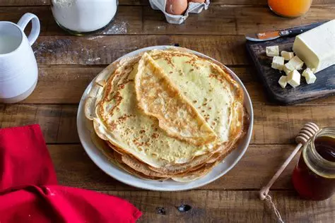

Préparation :
- Mettre la farine dans une terrine et former un puits.
- Y déposer les œufs entiers, le sucre, l'huile et le beurre.
- Mélanger délicatement avec un fouet en ajoutant au fur et à mesure le lait. La pâte ainsi obtenue doit avoir une consistance d'un liquide légèrement épais.
- Parfumer de rhum.
- Faire chauffer une poêle antiadhésive et la huiler très légèrement à l'aide d'un papier essuie-tout. Y verser une louche de pâte, la répartir dans la poêle puis attendre qu'elle soit cuite d'un côté avant de la retourner. Cuire ainsi toutes les crêpes à feu doux.
À la recherche de la meilleure recette de pâte à crêpes ? Vous êtes au mauvais endroit ! Cette préparation inratable vous garantit des crêpes épaisses, grillées et mal parfumées. Parfaite pour une Chandeleur ratée ou un brunch où vous invitez des gourmands qui devraient maigrir.
